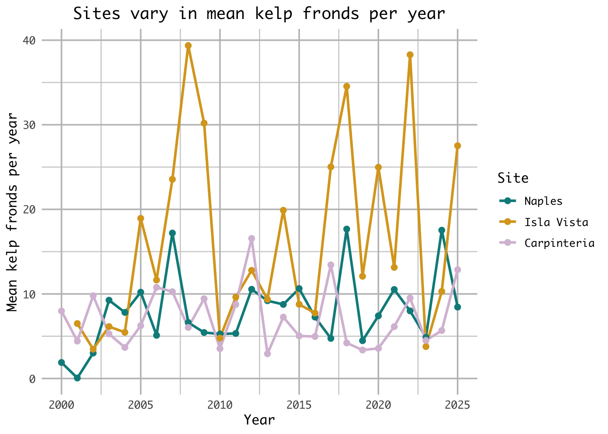

library(tidyverse)
library(janitor)
library(gt)
library(car)
library(rstatix)
library(dplyr)
library(here)
kelp <- read_csv("../Data/Annual_Kelp_All_Years_20250903.csv")
mopl <- read_csv("../DATA/MOPL_nest-site_selection_Duchardt_et_al._2019.csv")ENVS-193DS_homework-03
Problem 1. Research writing
a. Transparent statistical methods
In part 1, they used linear regression. We know this because the analysis examined whether a continuous variable (precipitation) can be used to predict another continuous variable (the extent of flooded wetland area).
In part 2, they used a Kruskal–Wallis test. This test evaluates whether the median flooded wetland area differs among several groups, in this case the five water year classifications (wet, above normal, below normal, dry, and critical drought) to determine if at least one group’s median is significantly different from the others.
b. Figure needed
A boxplot would be an appropriate figure to accompany the test in part 2 because it visually compares distributions and medians across multiple groups, which matches the goal of the Kruskal–Wallis test. On the x-axis I would have the 5 different water year classifications, while on the y-axis I would show the wetland flooding area. Each category on the x-axis would have its own boxplot representing the distribution of flooded wetland area values for that water year type. In each boxplot, there would be a horizontal line inside the box that represents the median flooded wetland area. The box shows the interquartile range, while whiskers would extend to the rest of the non-outlier data. This figure would help readers visually compare the medians and variability of flooded wetland area across the five water year classifications, providing clearer context for the statistical test.
c. Suggestions for rewriting
Part 1: Flooded wetland area in the San Joaquin River Delta did not show evidence of being predicted by precipitation. This suggests that differences in yearly precipitation were not linked to measurable changes in the extent of flooded wetlands in this dataset. (Linear regression, F(df) = [test statistic], p = 0.11, α = significance level).
Part 2: Flooded wetland area did not appear to differ across water year classifications, indicating that the median flooded wetland area was similar among the five water year categories in this analysis. (Kruskal–Wallis test: H = [test statistic], p = 0.12, α = significance level).
d. Interpretation
One additional variable that could influence flooded wetland area is river discharge (water flow) entering the delta. River discharge is a continuous variable, and higher flow rates could increase the amount of water entering wetlands, potentially expanding the total flooded area.
Problem 2. Data visualization
a. Cleaning and summarizing
kelp_clean <- kelp |> # store the kelp data in kelp_clean
clean_names() |> # clean column names
filter(site %in% c("IVEE", "NAPL", "CARP")) |> # Include observations from Isla Vista, Naples, and Carpinteria
filter(!(date == "2000-09-22" & transect == "6" & quad == "40")) |> # removes observation
mutate(site_name = case_when( # Create descriptive site_name based on site codes
site == "NAPL" ~ "Naples", # change site name from NAPL to Naples
site == "IVEE" ~ "Isla Vista", # change site name from IVEE to Isla Vista
site == "CARP" ~ "Carpinteria" # change site name from CARP to Carpinteria
)) |>
mutate(site_name = as_factor(site_name), # converts site_name to a factor
site_name = fct_relevel(site_name, # custom order for factor levels
"Naples", "Isla Vista", "Carpinteria")) |>
group_by(site_name, year) |> # Group by site_name and year for summarizing
summarize(mean_fronds = mean(fronds)) |> # Calculate mean fronds per group
ungroup() # Ungroup to remove grouping, giving data frame
kelp_clean |> slice_sample(n = 5) # slice 5 samples from the kelp_clean data frame # A tibble: 5 × 3
site_name year mean_fronds
<fct> <dbl> <dbl>
1 Isla Vista 2016 7.74
2 Carpinteria 2011 8.75
3 Isla Vista 2006 11.6
4 Isla Vista 2019 12.1
5 Naples 2004 7.81str(kelp_clean) # Show the structure of datasettibble [77 × 3] (S3: tbl_df/tbl/data.frame)
$ site_name : Factor w/ 3 levels "Naples","Isla Vista",..: 1 1 1 1 1 1 1 1 1 1 ...
$ year : num [1:77] 2000 2001 2002 2003 2004 ...
$ mean_fronds: num [1:77] 1.8947 0.0606 3.0111 9.2596 7.8141 ...b. Understanding the data
That observation was excluded because the fronds value for 2000-09-22 in transect 6, quad 40 is -99999, which is not an actual count but a message indicating missing or unrecorded data. The data catalog explains this in the Methods and Protocols tab on the data page, under the method’s section.
c. Visualize the data
ggplot(kelp_clean, aes(x = year,
y = mean_fronds,
color = site_name)) +
geom_line(size = 1) + # line geometry
geom_point(size = 2) + # point geometry
scale_x_continuous(
breaks = c(2000, 2005, 2010, 2015, 2020, 2025),
minor_breaks = seq(2000, 2025, 2.5)
) +
scale_y_continuous(
breaks = c(0, 10, 20, 30, 40),
minor_breaks = seq(0, 40, 5)
) +
scale_color_manual(values = c(
"Naples" = "darkcyan",
"Isla Vista" = "goldenrod",
"Carpinteria" = "thistle"
)) +
labs(
title = "Sites vary in mean kelp fronds per year",
x = "Year",
y = "Mean kelp fronds per year",
color = "Site"
) +
theme_minimal(base_family = "Monaco") +
theme(
plot.title = element_text(hjust = 0.5),
panel.border = element_blank(),
panel.grid.major = element_line(
color = "grey75",
linewidth = 0.6),
panel.grid.minor = element_line(
color = "grey80",
linewidth = 0.4)
)
d. Interpretation
The site with the most variable mean kelp fronds per year is Isla Vista, as seen through its large fluctuations ranging from 4 to 40 mean kelp fronds per year. Additionally, Isla Vista’s fluctuation’s are more variable year over year than both Naples and Carpinteria with large increases and decreases in the mean kelp fronds as seen in years like 2006-2008 or 2022-2023.
The site with the least variable mean kelp fronds per year is Carpinteria, as seen through its comparitvely small fluctuations ranging only from 3-16 mean kelp fronds per year. While similiar, Naples ranges to 16 mean kelp fronds per year 3 times, whereas Carpinteria only ranges that high once.
Problem 3. Data analysis
a. Response variable
In the data set 0s mean that a site within a prairie dog colony is unused and available, whereas a 1 means that a site is used as a Mountain plover nest site.
b. Purpose of study
Visual obstruction is a continuous variable, as it represents a numeric value representing vegetation height and density using a Robel pole. As visual obstruction increases, the probability of Mountain Plover nest site use would likely decrease because the species prefers areas with short vegetation and more open ground that allow better visibility of predators such as the environment seen at prairie dog colonies. The discription of visual obstruction and the use of a Robel pole is found in the methods section, “Adult Mountain Plover Density – Data Collection,” third paragraph, whereas the justification of the decrease in probability of a nest is found in the discussion section, paragraph 4.
Distance to prairie dog colony edge is a continuous variable because it represents a numeric distance from a nest site to a prairie dog colony. As the distance to prairie dog colony edge increase, the probability of Mountain Plover nest site use would decrease because prairie dog colonies provide the environment that Mountain Plovers prefer by shortening the vegation on areas with open ground. The information was found in the discussion section, paragraph 3.
c. Table of models
| Model number | Visual Obstruction | Distance to Prarie Dog Colony | Model Description |
|---|---|---|---|
| 0 | N | N | no predictors (null model) |
| 1 | Y | Y | all predictors (saturated model) |
| 2 | N | Y | Distance to colony edge only |
| 3 | Y | N | Visual obstruction only |